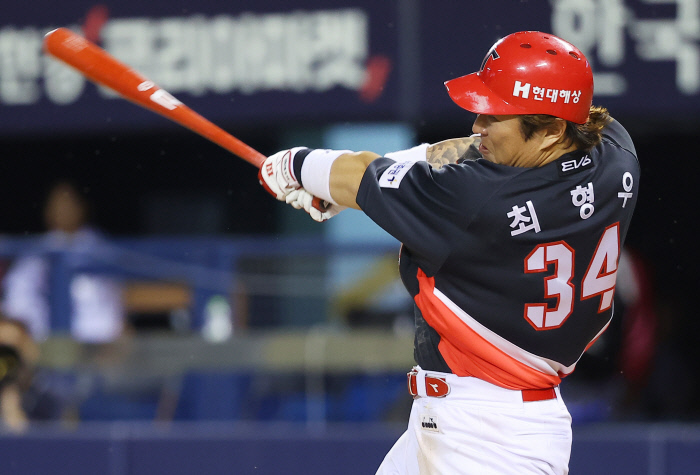

KIA의 해결사, 6년 150억의 FA 계약을 체결해 2022년부터 고향팀 KIA 타이거즈에서 활약하고 있다.

최형우 나무위키
2023년 종료 기준으로 KBO 통산 타자 기준 sWAR* 역대 4위,
KBO 리그 최초로 1600타점을 돌파한 통산 최다 타점 1위 기록, 통산 홈런 4위, 최다안타 3위,
통산 2루타 1위, 최다루타 2위 등을 기록하고 있다.
2010년대 초반에는 삼성 왕조 부동의 4번 타자로 리그에서 엄청난 생산성을 자랑하며 팀의 4연패를 이끌었고, 33세 시즌에 이적한 KIA 타이거즈에서도 많은 몸값에 걸맞는 뛰어난 성적을 올리며 명실상부 모범 FA로 자리매김하였으며 KIA의 2017년 우승을 이끌어냈다.
후배 선수들하고 살갑게 지내는 것을 보면 군기 반장 스타일은 아닌 것 같다. 본래 KIA는 타팀에 비해 위계가 있다는 평이 있었는데, 최형우 이적 후 느슨해졌다는 소리가 들리기 때문. 실제로 KIA 타이거즈 공식 유튜브에 올라오는 영상을 보면 후배들의 장난이나 디스도 웃으며 넘기는 편이다.